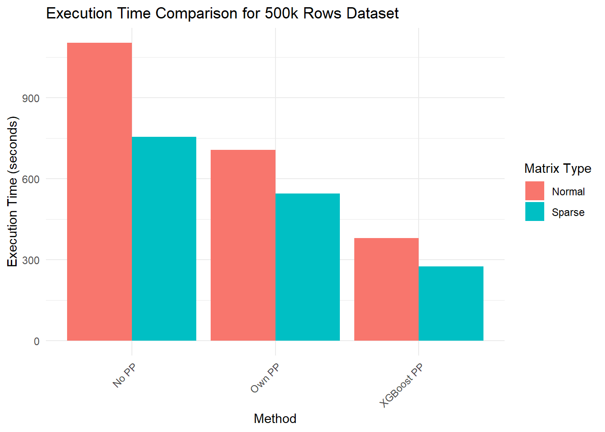
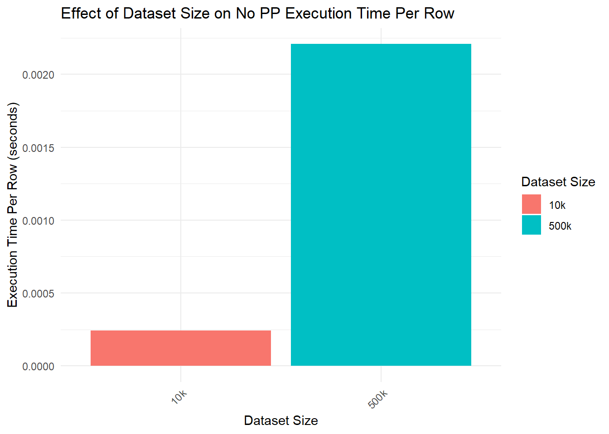

Chapter 6 Speeds
library(xgboost)
library(ROCR)
library(foreach)
library(doParallel)
library(Matrix)
library(readr)
library(dplyr)
library(ggplot2)
library(tidyr)6.1 Functions to run the tests
I will make 3 functions. One with my parallel processing, one with xgboost pp and then one with no pp at all so n thread = 1.
I have included the code so that you can see it but it is not important just know that we are looping r times and that the loops use bootstrapping for splits.
xgb1 <- function(r, xs, y, params, nrounds) {
start_time <- Sys.time() # Start timer
auc <- numeric(r) # Pre-allocate a numeric vector for AUC values
for (i in 1:r) {
# Bootstrap sampling
ind <- sample(nrow(xs), nrow(xs) * 0.8)
md_x <- xs[ind, ]
md_y <- y[ind]
test_x <- xs[-ind, ]
test_y <- y[-ind]
# onvert to DMatrix
dtrain <- xgb.DMatrix(data = md_x, label = md_y)
dtest <- xgb.DMatrix(data = test_x, label = test_y)
# Train the model
params <- list(objective = "binary:logistic", eval_metric = "auc")
model <- xgb.train(params = params,
data = dtrain,
nrounds = nrounds,
nthread = 1)
predictions <- predict(model, dtest)
pred <- ROCR::prediction(predictions, test_y)
perf <- ROCR::performance(pred, "auc")
auc[i] <- perf@y.values[[1]]
}
end_time <- Sys.time() # End timer
time_taken <- as.numeric(end_time - start_time, units = "secs")
list(auc = auc, time_taken = time_taken)
}xgb2 <- function(r, xs, y, params, nrounds) {
start_time <- Sys.time() # Start timer
auc <- numeric(r) # Initialize the AUC vector to store AUC values for each iteration
for (i in 1:r) {
# Bootstrap sampling
ind <- sample(nrow(xs), nrow(xs) * 0.8)
md_x <- xs[ind, ]
md_y <- y[ind]
test_x <- xs[-ind, ] # Potential indexing issue
test_y <- y[-ind] # Potential indexing issue
# onvert to DMatrix
dtrain <- xgb.DMatrix(data = md_x, label = md_y)
dtest <- xgb.DMatrix(data = test_x, label = test_y)
# Train the model
params <- list(objective = "binary:logistic", eval_metric = "auc")
model <- xgb.train(params = params,
data = dtrain,
nrounds = nrounds,
nthread = detectCores() - 1)
# Predicting and calculating AUC
predictions <- predict(model, dtest)
pred <- ROCR::prediction(predictions, test_y)
perf <- ROCR::performance(pred, "auc")
auc[i] <- perf@y.values[[1]]
}
end_time <- Sys.time() # End timer
time_taken <- as.numeric(end_time - start_time, units = "secs")
list(mean_auc = mean(auc), time_taken = time_taken)
}xgbpar <- function(r, xs, y, params, nrounds) {
start_time <- Sys.time() # Start timer
cl <- makeCluster(detectCores() - 1) # Use one less than the total number of cores
registerDoParallel(cl)
# Parallel processing using foreach
results <- foreach(i = 1:r, .combine = 'c', .packages = c('xgboost', 'ROCR')) %dopar% {
# Bootstrap sampling
ind <- sample(nrow(xs), nrow(xs) * 0.8)
md_x <- xs[ind, ]
md_y <- y[ind]
test_x <- xs[-ind, ] # Potential indexing issue
test_y <- y[-ind] # Potential indexing issue
# onvert to DMatrix
dtrain <- xgb.DMatrix(data = md_x, label = md_y)
dtest <- xgb.DMatrix(data = test_x, label = test_y)
# Train the model
params <- list(objective = "binary:logistic", eval_metric = "auc")
model <- xgb.train(params = params,
data = dtrain,
nrounds = nrounds,
nthread = 1)
predictions <- predict(model, dtest)
pred <- prediction(predictions, test_y)
perf <- performance(pred, "auc")
perf@y.values[[1]]
}
# Stop the cluster
stopCluster(cl)
end_time <- Sys.time() # End timer
time_taken <- as.numeric(end_time - start_time, units = "secs")
list(mean_auc = mean(results), time_taken = time_taken)
}6.2 Data
generate_dataset <- function(n_rows) {
set.seed(123) # Ensure reproducibility
df <- data.frame(y = sample(c(0, 1), n_rows, replace = TRUE))
# Add 10 numeric columns
for(i in 1:10) {
df <- df %>% mutate(!!paste0("num", i) := runif(n_rows))
}
# Add 20 factor columns
for(i in 1:20) {
df <- df %>% mutate(!!paste0("fac", i) := factor(sample(c("1", "2", "3"), n_rows, replace = TRUE)))
}
return(df)
}
# Generate datasets of different sizes
df<- generate_dataset(1000)
dfb <- generate_dataset(500000)6.3 10,000 rows
Create the data. as a note this data has no relations so it wont be predictable 20 factor collums 10 numeric
6.3.1 With a normal Matrix
6.3.2 With a sparse matrix
For a sparse matrix. The data must be one hot coded then turned into a dataframe. Then turned into a sparse matrix.
6.4 500,000 rows
6.4.1 With a normal Matrix
6.4.2 With a sparse matrix
For a sparse matrix. The data must be one hot coded then turned into a dataframe. Then turned into a sparse matrix.
y <- dfb$y
xs <- model.matrix(~ . -1 - y, data = dfb)
xs <- sparse.model.matrix(~ ., data = as.data.frame(xs))6.5 Presentations
Print them out
nrounds is 100 for all
10ks
matrix
## [1] 2.435772## [1] 4.363386## [1] 4.455129sparse
## [1] 1.903891## [1] 4.151235## [1] 4.104647500ks
matrix
## [1] 1104.106## [1] 378.959## [1] 707.4114sparse
## [1] 754.743## [1] 274.7935## [1] 545.27456.6 Analysis
6.6.1 Graphs
# Data preparation
results <- data.frame(
dataset_size = c(rep("10k", 6), rep("500k", 6)),
matrix_type = rep(c("Normal", "Sparse"), each = 3, times = 2),
method = rep(c("No PP", "XGBoost PP", "Own PP"), times = 4),
execution_time = c(t1sf, t2sf, tpsf, t1ssf, t2ssf, tpssf,
t150, t250, tp50, t1s50, t2s50, tps50)
)
# Graph for comparing methods on 10k rows dataset
ggplot(subset(results, dataset_size == "10k"), aes(x = method, y = execution_time, fill = matrix_type)) +
geom_bar(stat = "identity", position = "dodge") +
labs(title = "Execution Time Comparison for 10k Rows Dataset",
x = "Method",
y = "Execution Time (seconds)",
fill = "Matrix Type") +
theme_minimal() +
theme(axis.text.x = element_text(angle = 45, hjust = 1))# Graph for comparing methods on 500k rows dataset
ggplot(subset(results, dataset_size == "500k"), aes(x = method, y = execution_time, fill = matrix_type)) +
geom_bar(stat = "identity", position = "dodge") +
labs(title = "Execution Time Comparison for 500k Rows Dataset",
x = "Method",
y = "Execution Time (seconds)",
fill = "Matrix Type") +
theme_minimal() +
theme(axis.text.x = element_text(angle = 45, hjust = 1))
# Update the results data frame to include execution time per row
results$execution_time_per_row <- with(results, execution_time / ifelse(dataset_size == "10k", 10000, 500000))
# Re-define the plotting function to use execution_time_per_row
plot_dataset_size_effect_per_row <- function(data, method_name) {
ggplot(subset(data, method == method_name), aes(x = dataset_size, y = execution_time_per_row, fill = dataset_size)) +
geom_bar(stat = "identity") +
labs(title = paste("Effect of Dataset Size on", method_name, "Execution Time Per Row"),
x = "Dataset Size",
y = "Execution Time Per Row (seconds)",
fill = "Dataset Size") +
theme_minimal() +
theme(axis.text.x = element_text(angle = 45, hjust = 1))
}
# Separate results for normal and sparse matrices
normal_results_per_row <- subset(results, matrix_type == "Normal")
sparse_results_per_row <- subset(results, matrix_type == "Sparse")
# Plotting for each method, now on a per-row basis
plot_dataset_size_effect_per_row(normal_results_per_row, "No PP")
# Plotting for No PP, XGBoost PP, and Own PP methods for Sparse Matrix
plot_dataset_size_effect_per_row(sparse_results_per_row, "No PP") + ggtitle("No Parallel Processing (Sparse Matrix)")plot_dataset_size_effect_per_row(sparse_results_per_row, "XGBoost PP") + ggtitle("XGBoost Parallel Processing (Sparse Matrix)")
6.6.2 Takaways
With factor collums sparse seems to be better. With numeric collums though it would be worse. XGB is better with internal processing when nrows is huge. When nrows is smaller though we should probably be using gbm anyways.
Also times include how many loops we are doing which is related to numcores of the machine being used if you look at our codes
6.6.3 Things to change
Test light gbm and gbm with these.
test if only numerical data kills a sparse matrix.
What about doparrallel with numcores set inside the xgboost funtions.
What about purrr or other ways of parrallel processing.
Do correlations in the data(the data actually being predictable have a effect).
Does scaling help with speed?
Test purrr/furrr
Test these vs h2o